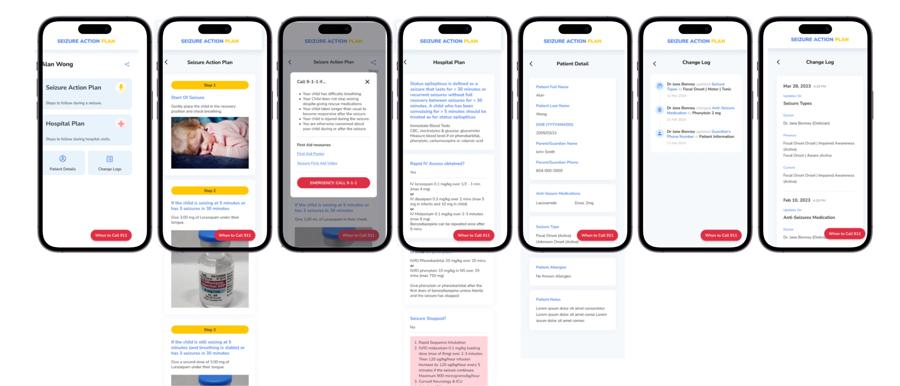
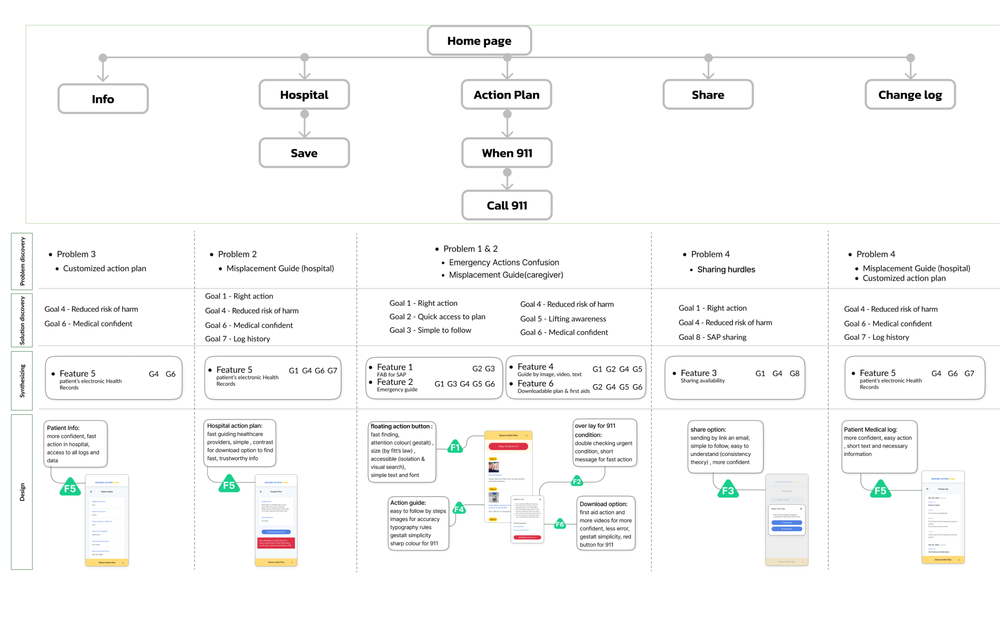
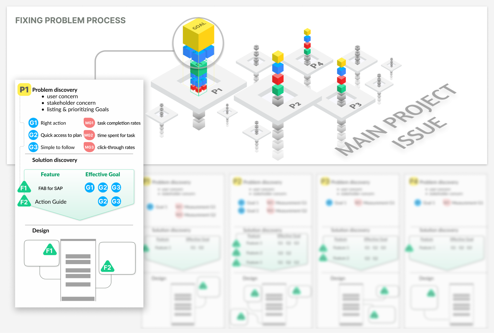
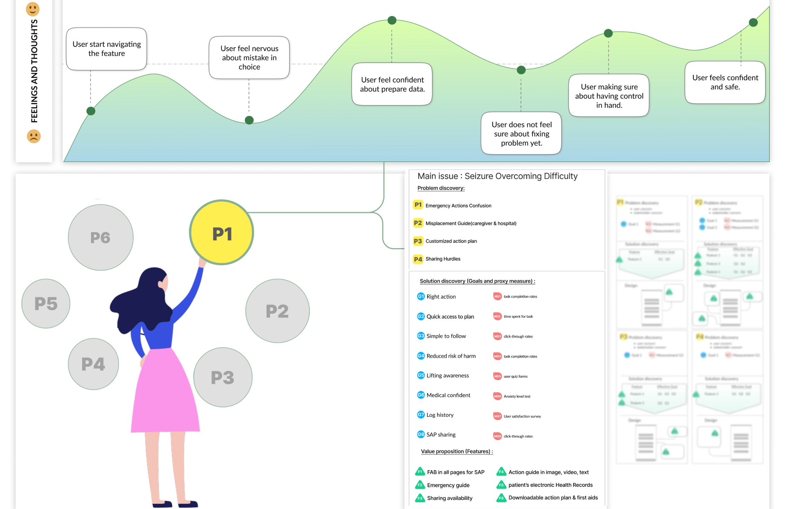
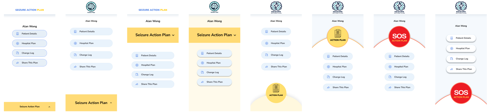
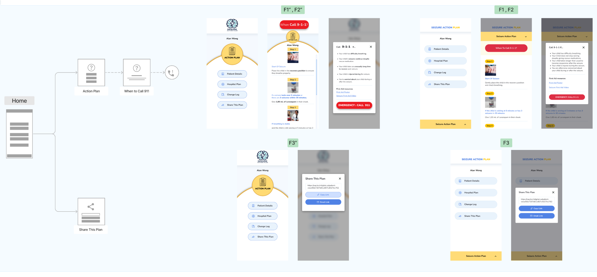
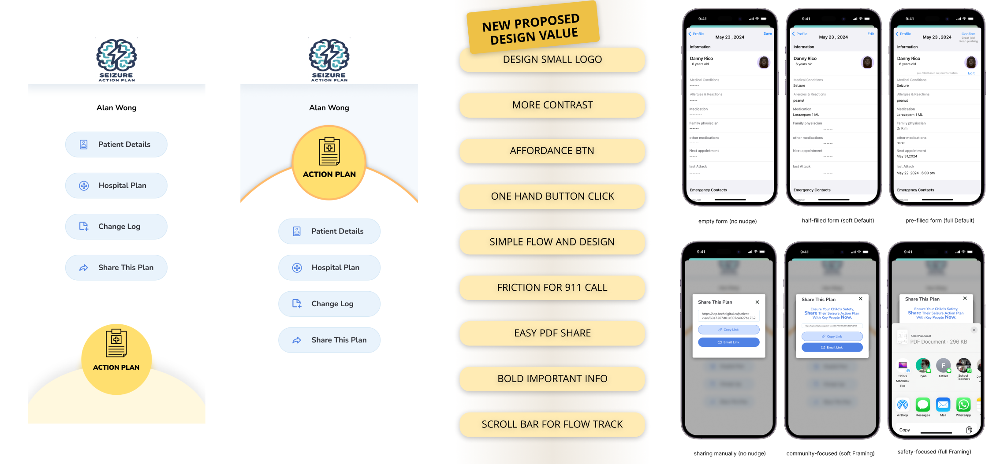

Seizure
Action Plan
Value-centric UX research and design for rapid pediatric seizure response — when seconds matter most.
About the Project
Design Process Overview
| Phase | Focus | Key Outcome |
|---|---|---|
| Planning 01 |
Page & flow mapping, feature inventory, defining goals | Structured product map & prioritized evaluation plan |
| Research 02 |
Stakeholder and caregiver interviews, heuristic review | Pain points in readability & decision-making speed |
| Prioritization 03 |
Assigning importance weights to features | Aligned user and stakeholder goals (BCCH & caregivers) |
| Ideation 04 |
UX redesign of the Action Plan Flow | Eight versions developed → two selected for testing |
| Testing 05 |
Behavioral A/B testing via Maze (50 users) | Reduced reading time & unnecessary 911 calls |
| Future 06 |
Digital nudges & decision support | Improved focus and reduced task friction |

Planning & Product Mapping
Systematic mapping of all pages, user flows, and app structure — every feature listed with its intended purpose before any design decisions were made.
A value hierarchy assigned numerical weights to each goal based on clinical and user significance.

Research & Audit
Interviewed 20 caregivers to surface real concerns, mental models, and needs. Findings clustered via affinity mapping.

Value Prioritization
Rating dimensions

Ideation & Design Direction
Eight versions developed across six design dimensions. Two were selected for A/B testing based on value-goal alignment.

User Testing
50 participants — caregivers and general users simulating caregiver roles — tested both versions via Maze under time constraints.

Refinement & Next Steps
